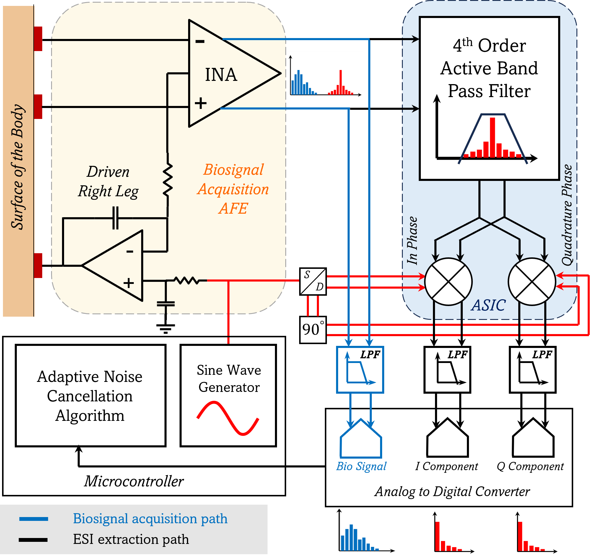
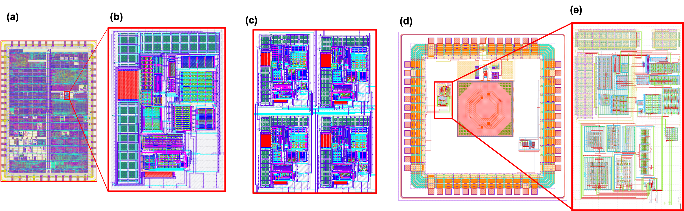
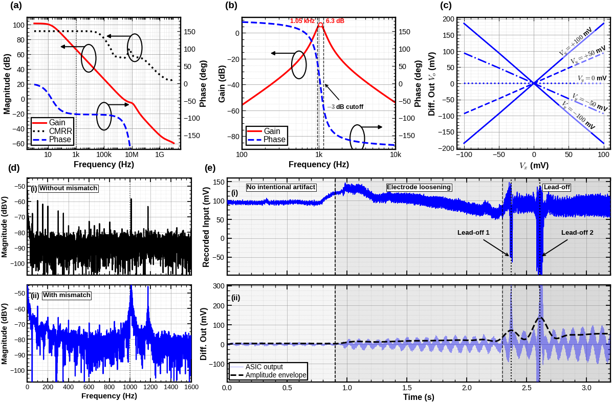

Biomedical integrated circuits · Analog design · 2026
Electrode-skin impedance measurement IC
A low-power analog signal path that measures electrode–skin impedance changes continuously and produces an I/Q reference for motion-artifact cancellation.
RESEARCH SUMMARY
Design overview
The IC creates an artifact-correlated reference by monitoring electrode–skin impedance changes. A driven-right-leg electrode injects a 1 kHz stimulus; a fourth-order active-RC band-pass filter isolates it, and two fully differential multiplier channels demodulate the response into in-phase and quadrature outputs. The low-frequency I/Q signals track contact changes while the biosignal recording path remains available for motion-artifact cancellation.
The filter uses two cascaded multiple-feedback stages. Its external resistors and capacitors allow the center frequency and bandwidth to be adjusted without changing the IC.
ARCHITECTURE & EVALUATION
Tracking contact through I/Q demodulation.
The system was evaluated with circuit and schematic-level simulations; the paper reports no silicon measurements of the complete extraction path.

Filter response
Post-layout simulations show 6.3 dB peak gain at 1.05 kHz, with −3 dB frequencies near 934 Hz and 1.15 kHz (approximately 0.21 kHz bandwidth, Q ≈ 4.9).
System-level evaluation
The paper reports 0.24 mm² for the full SKY130 signal-path layout and estimates about 2 mW at 1.8 V. Simulations using recorded biosignal data show increasing stimulus-related output as electrode contact loosens, with transients at lead-off events.
The paper reports post-layout verification of the SKY130 op-amp/filter path and separate IHP 130 nm BiCMOS multiplier work. These blocks were verified independently; the complete signal path has not yet been measured in silicon.

